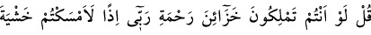
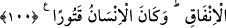
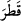

kabullenmediler.” Ancak onu inkâra râzı oldular.
100. De ki: Rabbimin rahmet hazinesine eğer siz sahip olsaydınız, harcanır
korkusuyla kıstıkça kısardınız. İnsanoğlu da pek eli sıkıdır!
Kâfirlere “De ki: Rabbimin rahmet hazinelerine” tüm varlıklara bolca verdiği rızık
hazinelerine “eğer siz sahip olsaydınız, harcanır korkusuyla” harcamanın sonucu olan
bitme korkusuyla “kıstıkça kısardınız.” Cimrilik yapardınız. Cimriye ‘ mümsik’ denir.
“İnsanoğlu da pek eli sıkıdır!” “__WORD__” cimri davrandı, kıstı demektir. Yâni, insanoğlu
eli sıkı, cimrilikte aşırıya gidicidir, demektir. Çünkü insanın işi ihtiyaca ve ihtiyaç
duyduğu şeyde cimrilik etme ve harcadığı şeyin karşılığını bekleme düşüncesi üzerine
kuruludur.
Allah Rasûlü (s.a.) Ensar’dan bir kabileye “Efendiniz kimdir, ey Selemeoğulları?”
diye sordu. “Kendisinde cimrilik olsa da Ced b. Kays’tır” dediler. Bunun üzerine
“Cimrilikten daha kötü bir hastalık var mıdır? Hayır, bundan böyle efendiniz Amr b.
Cemuh’tur” buyurdu.[151] Çünkü cimrilik ve ihtiras kötü sıfatlardandır. Bu yüzden nefsi
bunlardan temizlemek; cömertlik, kanâat ve uzun emelleri terk etme sıfatlarıyla
süslemek gerekir. Çünkü şeytan itâatkâr olsa da cimriyi kendine köle yapar, günahkâr da
olsa cömertten uzak durur. İnsan cinsi her ne kadar cimri, toprak gibi sıkılık ve kuruluk
üzere yaratılmış olsa da içlerinden Allah’ın sıfatlarıyla sıfatlanan, zâtının sırlarının
hakîkatine eren has kullar da vardır.
Hassân b. Sâbit (r.a.) Hz. Peygamber (s.a.)’i medhederken şöyle demiştir:
Öyle bir eli var ki O’nun; cömertliğinin onda biri
Eğer toprakta olsaydı denizden daha yaş olurdu.
Rivâyet olunduğuna göre bir adam ehl-i beyt imamlarından Zeynelâbidin (r.a.)’la
karşılaştı ve ona sövdü. Bunun üzerine hizmetçileri ve köleleri adamın üzerine yürüdü.
Zeynelâbidin adamı bırakmalarını söyledi ve ona yaklaşıp: “Bizim gizli kalmış
kusurlarımız daha da çoktur. Senin bir ihtiyacın varsa sana yardım edelim?” dedi. Adam
utandı. Bunun üzerine üzerindeki desenli siyah bir elbiseyi çıkarıp ona verdi. Kendisine
de bin dirhem verilmesini emretti. Bundan sonra adam: “Senin Peygamber neslinden
olduğuna şâhidlik ederim” dedi.
Aldanmış kişi, onların dünya ehli olup mallarını harcayan kimseler olduklarını
sanmasın. Onlar ancak cömert ve mürüvvet sâhibiydiler. Dünya onlara gelir, onlar ise